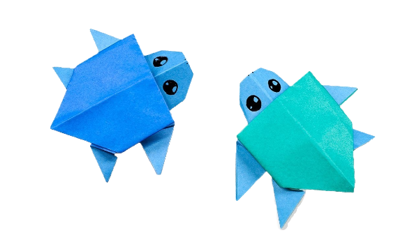
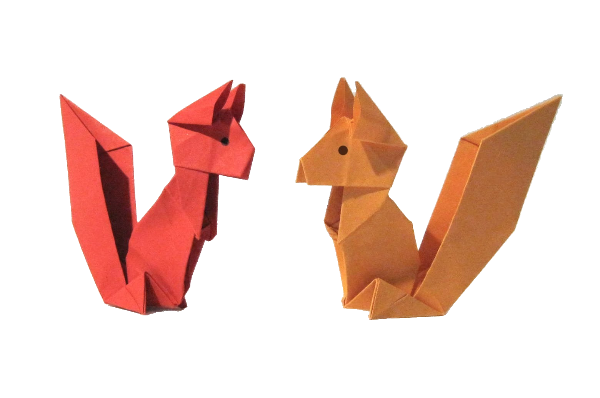
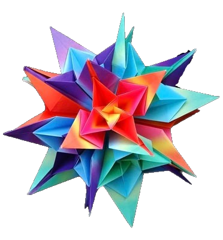

Origami Designs
Origami Designs
About Us
Follow Us
Interesting facts about Origami:-
- Origami was derived from 2 Japanese Words- Ori(folded) Kami(paper).
- Before that, the art was called "Orikata".
- An ancient Japanese legend says that if you fold one thousand cranes you will be granted a wish.



Facts about a squirrel:-
- Squirrels are members of the family Sciuridae, a family that includes small or medium-size rodents.
- The squirrel family includes tree squirrels, ground squirrels, chipmunks, marmots, flying squirrels, and prairie dogs amongst other rodents.
Facts about a flower:-
- Flowers did not always exist, they first appeared 140 million years ago.
- Several years ago in Holland, tulips were more valuable than gold.
- Broccoli actually a flower.
- Some plants such as orchids do not need soil to grow, they get all of their nutrients from the air.